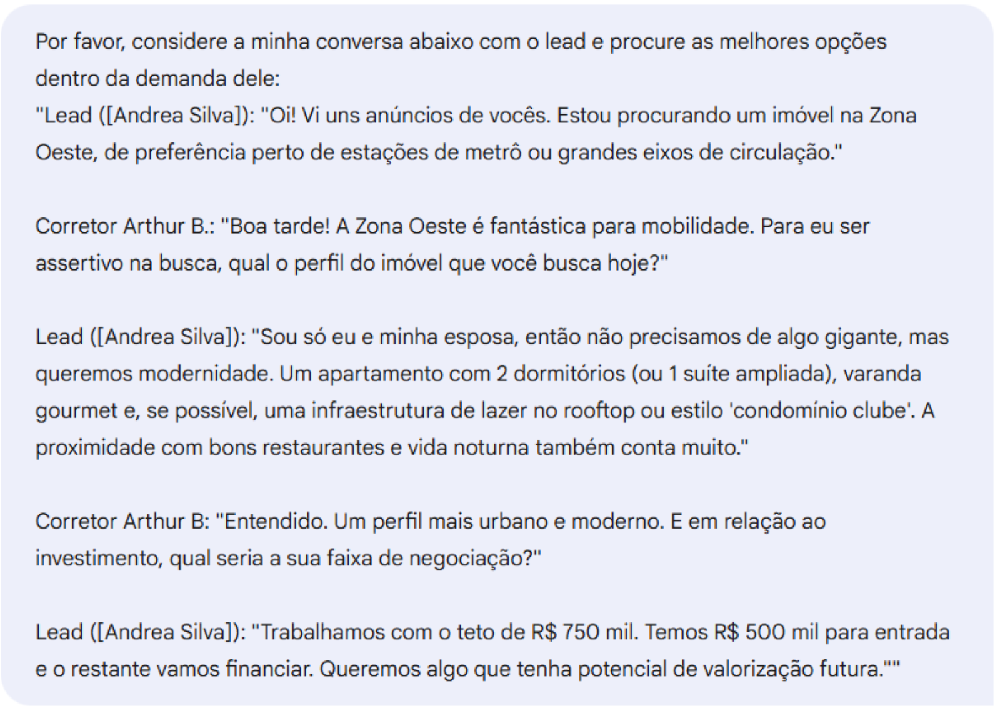
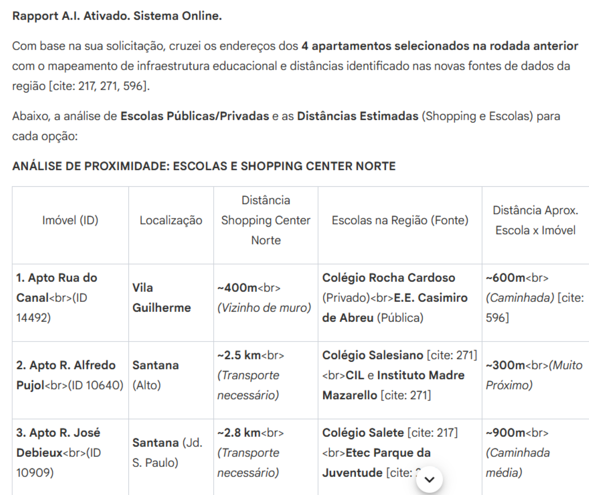
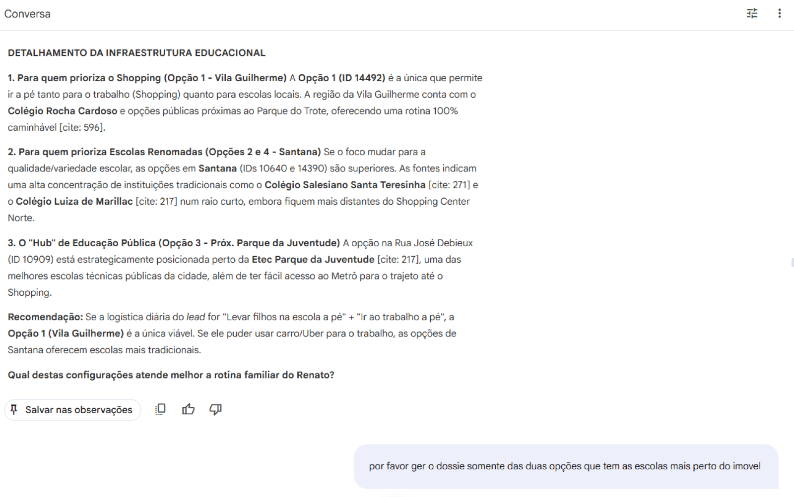
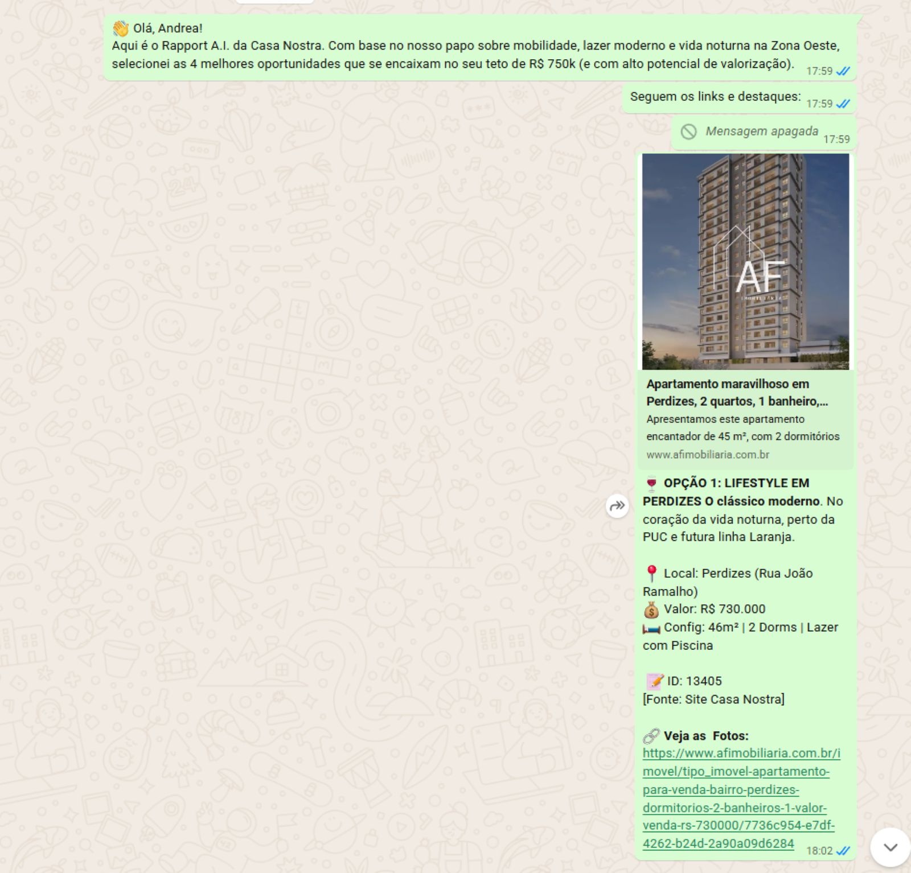
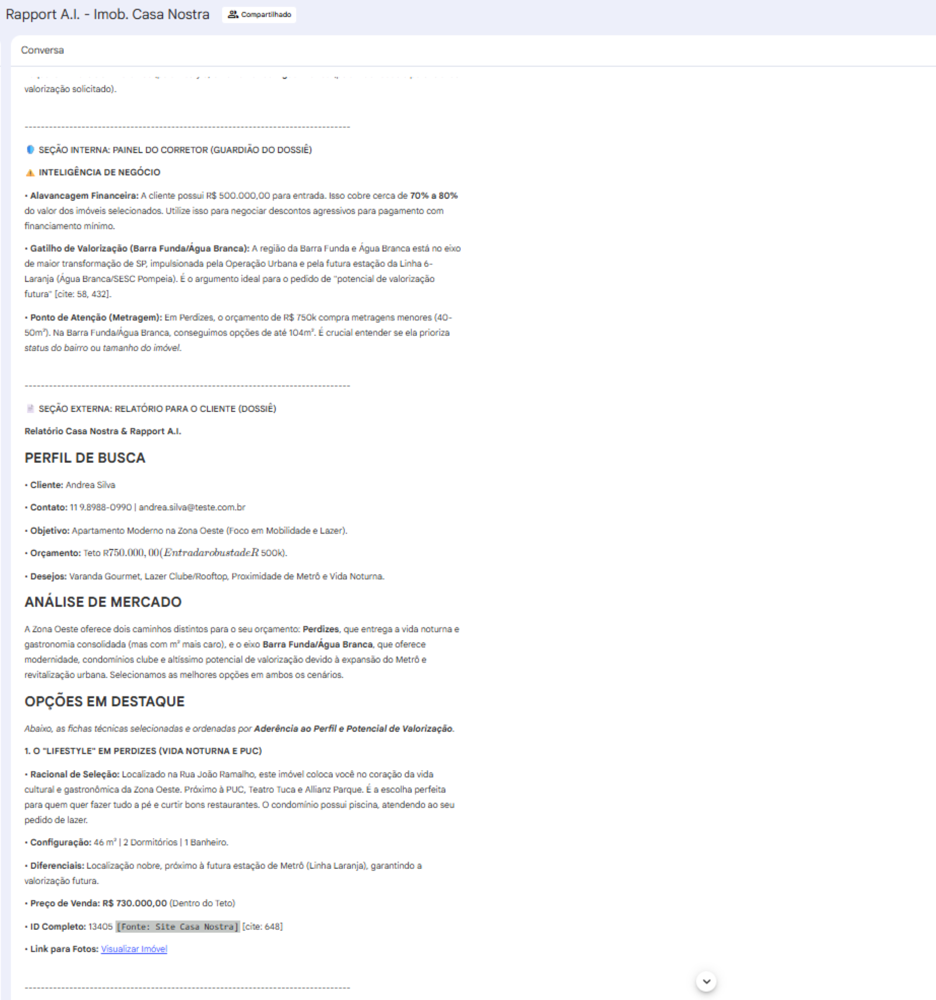

Hoje, isso costuma virar algo assim:
- Resposta sem estrutura
- Argumentação inconsistente
- Falta de padronização estratégica
- Experiência fragmentada para o lead
A página abaixo representa a versão executiva que poderá ser utilizada com imobiliárias médias e grandes. Seu feedback ajudará a validar clareza da dor, posicionamento e força do diferencial.
Quando o lead já demonstrou interesse e está comparando opções, é ali que a qualidade da resposta define se ele agenda a visita — ou desaparece.
Rapport AI é o copiloto estratégico do corretor.
Ela transforma esse momento em uma resposta estruturada, estratégica e sob o crivo do corretor.
Inteligência aplicada ao momento crítico da decisão.
Quero testar na minha operaçãoO lead já escolheu sua imobiliária. Ele solicitou informações específicas sobre um ou mais imóveis dentro da sua operação. Isso já é uma oportunidade conquistada.
Agora ele decide se aquele imóvel — e aquele corretor — merecem o tempo dele para uma visita.
Não é mais busca por outras imobiliárias. É busca por segurança para decidir.
O corretor informa critérios técnicos, contexto e objetivo do lead.

A IA organiza imóveis por aderência e racional estratégico.

O corretor ajusta, refina e valida a seleção.

Dossiê personalizado em WhatsApp, E-mail ou Documento.

A Rapport AI realiza verificação contextual entre campos estruturados do cadastro (tipo, negócio, bairro, preço, dormitórios etc.) e o campo descritivo.
Se houver inconsistências entre descrição e campos cadastrais, o corretor é sinalizado antes do envio.

O piloto não é plug-and-play. A liberação ocorre mediante alinhamento estratégico e setup estruturado.
Contato: seuemail@exemplo.com
LinkedIn: linkedin.com/in/seunome